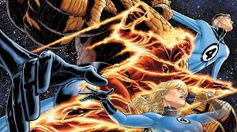
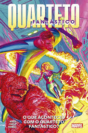

Senhor Fantástico (Reed Richards)
Poder: Elasticidade — pode esticar o corpo em qualquer forma
Personalidade: Gênio científico e líder do grupo
Mulher Invisível (Sue Storm)
Poder: Invisibilidade e criação de campos de força
Personalidade: Inteligente, estratégica e emocionalmente forte
Tocha Humana (Johnny Storm)
Poder: Controla o fogo e pode voar
Personalidade: Impulsivo, carismático e brincalhão
O Coisa (Ben Grimm)
Poder: Força sobre-humana e corpo feito de pedra
Personalidade: Durão por fora, mas leal e sensível

